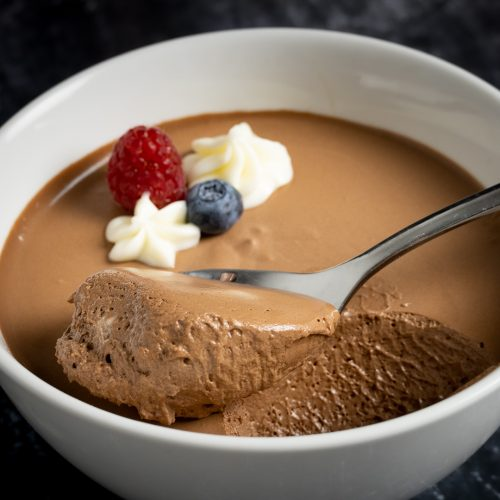

Mousse de Chocolate
La mousse de chocolate se prepara con 200 g de chocolate negro derretido, 3 huevos (separando claras y yemas), 50 g de azúcar, 200 ml de crema de leche fría y esencia de vainilla opcional. Primero, se mezclan las yemas batidas con azúcar y el chocolate derretido; luego, se incorporan las claras montadas a punto de nieve y la crema batida hasta obtener una textura esponjosa. Finalmente, se vierte en recipientes y se refrigera al menos 4 horas antes de servir, resultando en un postre aireado y cremoso.
